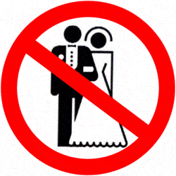

is an aspiring philosopher king, living the dream, travelling the world, hoarding FRNs and ignoring Americunts. He is a European at heart, lover of Latinas, and currently residing in the USA.


The Canadian province of Ontario, which includes around 40% of Canada’s population, and includes the capital city of Ottawa and Toronto, ground zero for slutwalks and feminism, has now passed a law encouraging children as young as 5 years old to become transvestites.
A Brave Slutwalk Message: I didn’t realize this was ever in question
The Supporting Children, Youth, and Families Act, 2017 (Bill 89), was passed in June of the Current Year and is a reform to the existing child care laws codified in the old Child and Family Services Act of 1990 (the last sane period in the west). The new law is comprehensive, with 352 sections. Rewriting a child welfare law is a major endeavor, and this law was done with specific nefarious intentions.
The Ministry administers child aid, foster care, and adoption services for the millions of children living in Ontario. It aids children who are abandoned or deemed to be at risk, and in need of public support due to lack of adequate parenting by natural parents or other legal guardians.
Two examples would be a child whose parents die without a named godparent or a child of a single mother who is arrested and sent to prison. In 2016 Ontario provided social services to over 113,000 families with children (approximately 5% of the 2,285,450 families with children in the 2011 Census). The Ministry provides care via to children up to the age of 16. Let’s take a look at what the new law entails.
The age of protection is raised from 16 to 18 under the new law. This is the most reasonable provision. Public school typically terminates around age 18, and it is difficult to be self sufficient in modern society prior to this age, even if our ancestors were starting families and running businesses in their early teens. However, it is notable that the ages 16-18 are when many children go through puberty, and become sexually active in some form. This provision is key when combined with the tranny provisions outlined below.

Government will be required to collect racial information on the children that it is helping. While race is a factor that private firms and individuals are often prohibited from even discussing or collecting, the government will be required to collect racial data and analyze and assist people on the basis of race. The old government was already required to provide services to all children, regardless of their race, so this component serves no other purpose than further demonizing whites, especially white straight males.
The religious background of the child has traditionally been considered in formulating a plan for assistance. A Catholic girl whose parents were killed in an auto accident would likely be referred to a Catholic adoption service run by a local convent, who would try to find parents that would continue raising the child with similar morals and values as her parents. A Jewish boy whose mother was arrested for assaulting a stranger would likely be referred to someone in the Jewish community so that he could continue to be raised in that culture.
But under the new law, the child’s religion is no longer a factor in making decisions for his placement or care. And religious protections which specifically protected a parent’s right to direct the child’s education and religious upbringing are gone. In its place, the Ministry must now consider the child’s…
…race, ancestry, place of origin, colour, ethnic origin, citizenship, family diversity, disability, creed, sex, sexual orientation, gender identity and gender expression.
Courts, which were required to determine the religious faith of the child as soon as possible, will not determine the child’s faith at all. So the child’s faith and beliefs are unimportant, but his race, family diversity (whatever that is), sexual orientation, and gender flavor of the day, must be considered in assisting him. Got it.
Will they exist after this law?
Religious groups have warned that while the word “creed” does appear in the new law, asking a child if he has a creed is far different from determining what religion he was raised in. Language in legal documents is strictly interpreted (hence why “sex, sexual orientation, gender identity, gender expression, and family diversity,” which all mean basically the same thing, are explicitly included in the text, but religion or ordained faith is not).
In place of religion, we have several gender identity feelings that must be considered when aiding the child. Since these are codified in law, it means that social workers must discuss sexual matters with children, in order to determine their placement on the spectrum of 72 genders, or if they like to dress as a member of the opposite sex, which would indicate that they are a potential tranny, and therefore must be raised in a manner which encourages trannyism.
These questions will be posed to children as young as 5, who are not sexual in any way, other than possessing a nonfunctioning penis or vagina, as well as teens in the newly-expanded age bracket of 16-18, when hormones are at their strongest, and youthful brains are at their most susceptible. The mere introduction of ideas of gender fluidity or questioning the sexual diversity of a child’s desires can be enough to trigger young minds to have nontraditional sexual thoughts, which would be fully reinforced and encouraged by the government, schools, and peer group.
The danger is not limited to the innocent children whose parents either actively or accidentally are no longer able to care for their children. The new law expands the scope of intervention to any Ontario family with children. The old law was written to require “the least disruptive course of action” available, with removal from a willing parent as a final resort only.
The new law modifies the phrase “least disruptive course of action, including the provision of prevention services,” which encourages the Ministry to apply preventive measures to existing families, which are not deemed to be disruptive, and therefore can be applied broadly.
Canadian Dad About to Lose His Kids
What this means, according to Ontario Minister of Children and Youth Services and Minister Responsible for Anti-Racism Michael Coteau, is that if a child has certain gender feelings that are not supported or actively opposed by one’s parents (which could potentially mean telling your 13 year old that no, you are not a pansexual attack helicopter), this could be considered…
…a form of abuse, when a child identifies one way and a caregiver is saying no, you need to do this differently… If it’s abuse, and if it’s within the definition, a child can be removed from that environment and placed into protection where the abuse stops.
Citizen: In the name of Family Diversity, you are being reassigned a new Brave and Stunning Wife
The Minister of Children is charged with the important task of protecting the most vulnerable in society—children that are left without a viable option for a good caregiver. This vital service is being turned into a political tool to further weaken religion and expand tranny and homosexual beliefs. What is the purpose of encourage more sexual degeneracy? Why are Western governments advocating for these types of behaviors while trying to silence or attack those who promote normal, healthy civilized values?

Men attempting marriage in the West are already playing a dangerous game, and that’s if they find a conservative, traditional, foreign bride and try to raise a family under the same traditional principles and beliefs of their ancestors. This new Canadian law further stacks the deck against men trying to have a traditional family life. More and more, the solution looks like not just finding a foreign bride, but relocating to a foreign environment.
Even if America goes a few years without passing a similar law, the mindset behind it already exists strongly in this country. In Canada, will it soon be a thought-crime to have a straight hetero family, and governments will force-place some tranny in your home to encourage “familial diversity” and “gender expression”?
(Canadian outlet Rebel Media summarizes some of the changes in this law in a video.)
Read More: A Modern Day Horror Story On The Origin Of The Transgender Movement